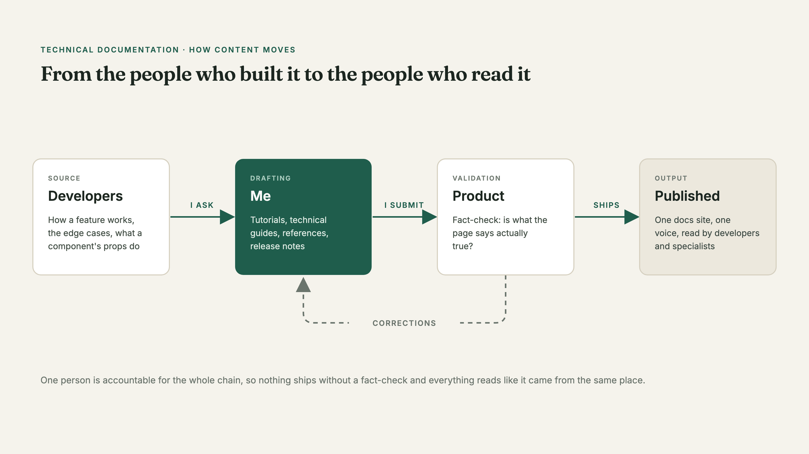
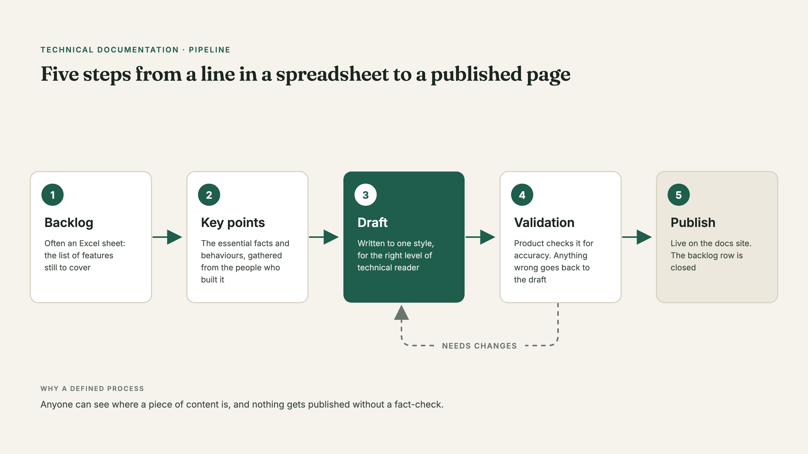

Hero: a clean, generic docs site layout (sidebar + article), Docusaurus-style, no real content.
The problem
The documentation existed, but nobody was actually responsible for it. It was written by two or three people who all had other, bigger jobs to do — so it happened in the gaps, in between everything else.
You could tell. Each writer had their own style, so the docs site read like three different sites stitched together. Features got documented when someone had a spare hour, which meant some had detailed pages and others had nothing.
What I took on
My job was to make the documentation someone's actual job — mine. I got familiar with the platform on Docusaurus and started writing across the board: feature docs, component references, release notes, and tutorials.
But the writing is only half of it. The real work is upstream. I chase the developers and get out of them everything a reader needs to know: how a feature works, what the edge cases are, what a component's props do. Then I turn that into a tutorial, a technical guide, or a manual, get it validated by Product, and publish.

How the process works
Content doesn't go from zero to published in one step. It moves through iterations:
- A backlog — often an Excel with the list of features to cover
- Key points — the essential facts and behaviours, gathered from the people who built it
- Draft — written to a consistent style, for the right level of technical reader
- Validation — Product checks it for accuracy
- Publish
The value of a defined process is that anyone can see where a piece of content is, and nothing gets published without a fact-check.

Writing for a technical audience
This audience is different from the product's end users. These are developers and specialists who want completeness and precision, not hand-holding. So the writing shifts: jargon is fine when it's the clearest word, the detail goes deep, and the structure has to let someone scan for the exact thing they came for.
What changed
The docs stopped reading like three different people wrote them, because now one person is accountable for the whole thing. Coverage got more even — features get documented as part of the workflow, not whenever someone finds a spare hour. And because everything gets validated by Product before it ships, readers can trust that what's on the page is actually true.
Good documentation is invisible when it works — nobody thanks the guide that answered their question before they had to ask it. That's the goal I'm writing towards.